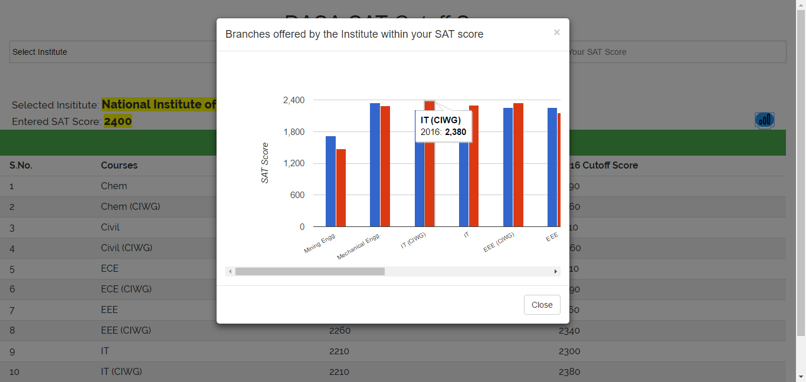
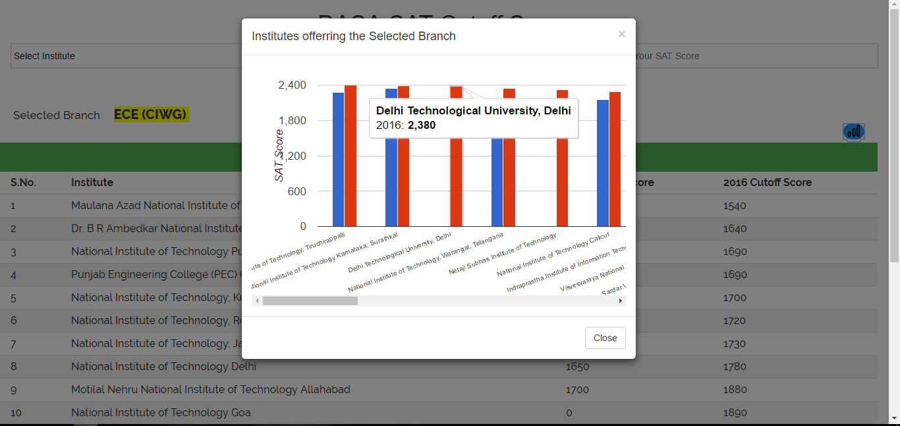

1 / 12
Input Name: [ Institute Name | Course Name | Score ]
Output : Eligibility
2 / 12
Input : [ Institute Name | Course Name ]
Output: Cutoff Score of the Selected Course of the Institute
3 / 12
Input : [ Institute Name | Course Name ]
Output: Cutoff Score of the Selected Course of the Institute
4 / 12
Input : [ Course Name | Score ]
Output : All the Institutes offering the selected course within the entered SAT Score
5 / 12
Input : [ Course Name | Score ]
Output : All the Institutes offering the selected course within the entered SAT Score
6 / 12
Input : [ Institute Name | Score ]
Output : All the courses offered by the Institute within the entered SAT Score.
7 / 12

Input : [ Institute Name | Score ]
Output : All the courses offered by the Institute within the entered SAT Score.
8 / 12
Input : [ Institute Name ]
Output : All the courses offerred by the selected Institute and thier cutoff score.
9 / 12
Input : [ Institute Name ]
Output : All the courses offerred by the selected Institute and thier cutoff score.
10 / 12
Input : [ Course Name ]
Output: All the Institutes offerring the selected branch with their cutoff Score.
11 / 12

Input : [ Course Name ]
Output: All the Institutes offerring the selected branch with their cutoff Score.
12 / 12
Input : [Score]
Output: All the Institutes and their courses within the entered SAT score.